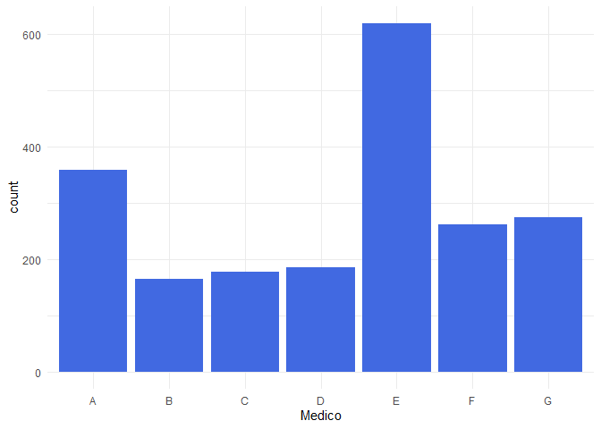

Introdução
Um texto bonito sobre o banco de dados e tudo mais e blá blá blá.
Variáveis:
O banco de dados fornecido contém as seguintes variáveis:
- Longitude
- Latitude
- Médico
- Idade
Além do mais, também foi fornecido a localização em que cada médico realiza os atendimentos, sendo com isso possível calcular a distância entre a residência do paciente e o local de atendimento.
Para o cálculo da distância foi utilizado a fórmula de Haversine.
Objetivos
- Bora escrever oq a gente quer fazer com essa pesquisa aq vitão
Lendo e manipulando os dados
Análise Descritiva
